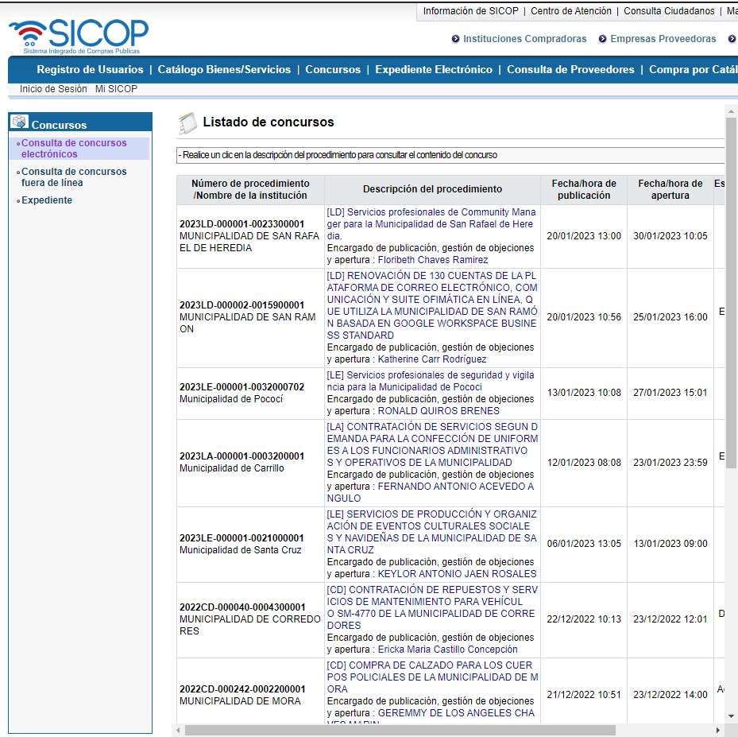
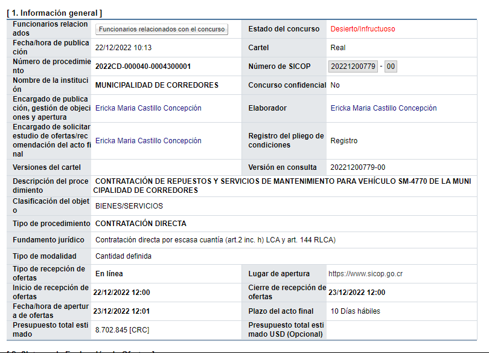

setwd("~/GitHub/R-Geografia-y-Data/posts/SICOP/") # Directorio de trabajo
# Paquetes a utilizar
library(RSelenium)
library(tidyverse)
library(rvest)
library(xml2)
library(stringi)
library(seleniumPipes)
library(XML)
library(knitr)
library(kableExtra)
library(netstat) # Para el free_port()Contexto de SICOP
En este proyecto se obtienen datos del Sistema Integrado de Compras Públicas (SICOP) por municipalidad. El fin es realizar un análisis descriptivo y espacializar los datos por municipalidad o institución (cantón o localización de municipalidad).
Este sistema se autodenomina como una novedosa herramienta para la realización de negocios vía web. De forma más específica, permite a las proveedurías del Estado realizar compra y venta de servicios y productos de forma electrónica.
Este modelo de compras se realizó tras un análisis de prácticas efectuadas por países como Chile, Panamá, México, Brasil y Corea. Dicho estudio finalizó con la adopción del modelo de Corea del Sur, por ser lider mundial en esta temática (compras electrónicas); mediante su sistema de gestión denominado Korea On Line e-Procurement System (Koneps), definido como el ‘marketplace’ más grande del mundo. Este modelo, mencionan en información de SICOP (SICOP, 2015).
Webscraping SICOP
Carga de librerías y directorio de trabajo
El directorio de trabajo depende de donde se encuentre el archivo de trabajo.
Llenado de formularios
# Cambiar fecha
dd <- "01" # Día
mm <- "01" # Mes
aa <- "2010" # Año
strdate <- paste0(dd,mm,aa) # deben ser de tipo string o si no se borran los ceros
# Se encuentra el cuadro de fecha con el xpath
fecha <- remDr$findElement("xpath", '//*[@id="regDtFrom"]')
fecha$clickElement() # Se clickea la fecha
fecha$clearElement() # Se borra la fecha que está puesta por default
fecha$sendKeysToElement(list(strdate)) # Se escribe lo que interesaEnseguida, se busca la opción de “Estado del Concurso” mediante su xpath, el cual se obtiene desde el navegador. Se selecciona la opción “Todos”
remDr$findElement("xpath","/html/body/div[1]/div/div[2]/form[1]/table/tbody/tr[12]/td/select/option[1]")$clickElement() # Estado del concursoObtención de información tabulada
Finalmente, para realizar la búsqueda se realiza click al cuadro de consultar especificando mediante su xpath
# Para consultar
# Se hace una variable para con la consulta para facilitar el ejemplo
Consultar <- remDr$findElement("xpath", "/html/body/div[1]/div/div[2]/p/span/a")
Consultar$clickElement() # Se hace click en consultar (por xpath)Al realizar la búsqueda se aprecia que los contenidos se encuentran en una tabla y además existe una cantidad de páginas con más tablas. Si se desea obtener todo el contenido de todas las páginas entonces el objetivo es la obtención de todas las tablas por cada páginas.
Sin embargo para comprender como funciona la obtención de información, se puede realizar por pasos. Para obtener la primera tabla se puede realizar lo siguiente:
read_html(remDr$getPageSource()[[1]]) %>%
html_nodes(xpath = "/html/body/div[1]/div/div[2]/table[2]") %>%
html_table(trim = T)Y al ejecutar el código se obtiene un resultado similar al siguiente:
| Número.de.procedimiento.Nombre.de.la.institución | Descripción.del.procedimiento | Fecha.hora.depublicación | Fecha.hora.deapertura | Estado.del.concurso |
|---|---|---|---|---|
| 2022CD-000040-0004300001MUNICIPALIDAD DE CORREDORES | [CD] CONTRATACIÓN DE REPUESTOS Y SERVICIOS DE MANTENIMIENTO PARA VEHÍCULO SM-4770 DE LA MUNICIPALIDAD DE CORREDORES Encargado de publicación, gestión de objeciones y apertura: REYMOND GONZALEZ ZUÑIGA | 22/12/2022 10:13 | 23/12/2022 12:01 | En recepción de ofertas |
| 2022CD-000242-0002200001MUNICIPALIDAD DE MORA | [CD] COMPRA DE CALZADO PARA LOS CUERPOS POLICIALES DE LA MUNICIPALIDAD DE MORA Encargado de publicación, gestión de objeciones y apertura : GEREMMY DE LOS ANGELES CHAVES MARIN | 21/12/2022 10:51 | 23/12/2022 14:00 | En recepción de ofertas |
| 2022LD-000003-0003100001Municipalidad de Puntarenas | [LD] CONTRATACIÓN DE SERVICIOS PROFESIONALES PARA LA ELABORACION DE LOS MANUALES DE PROCEDIMIENTOS FINANCIERO CONTABLES DE LA MUNICIPALIDAD DE PUNTARENAS Encargado de publicación, gestión de objeciones y apertura : LUIS EDWARD ROJAS BARRANTES | 21/12/2022 09:33 | 23/12/2022 15:00 | En recepción de ofertas |
| 2022CD-000204-0002300005Municipalidad de Sarapiquí | [CD] CONTRATACIÓN DE SERVICIOS AUXILIARES PARA DEPARTAMENTO DE BIENES INMUEBLES DE LA MUNICIPALIDAD DE SARAPIQUI Encargado de publicación, gestión de objeciones y apertura : ELVIN HERNANDEZ LORIA | 20/12/2022 17:45 | 22/12/2022 12:00 | En apertura |
| 2022CD-000203-0002300005Municipalidad de Sarapiquí | [CD] Solicitud de contratación de servicios auxiliares para el departamento de plataforma de servicios de la Municipalidad de Sarapiquí. Encargado de publicación, gestión de objeciones y apertura : ADILIA SANCHEZ MONTOYA | 20/12/2022 16:01 | 22/12/2022 12:00 | En apertura |
Nota
Únicamente se colocan 5 elementos para facilitar la visibilidad. El código podría devolver más o menos concursos según los parámetros de búsqueda o la misma existencia de concursos.
Capturas de pantalla
Dicha tabla correspondería al contenido de tabla actual de la página web de SICOP. De igual forma puede realizarse un “screenshot” el contenido actual de la página de la siguiente manera:
# Si usas esta opción, la pestaña se maximiza y el screnshot abarcará más área
# remDr$maxWindowSize()
remDr$screenshot(file = "output/ss/SICOP_Municipalidad.png") # Tomar screenshotEl screenshot se vería de la siguiente forma:

Obtención de datos detallados
Según la tarea que se realice, puede que interese la obtención de más detalles en la misma página web. En la página de SICOP, al dar click en alguno de las descripciones de procedimientos es posible obtener información más detallada de cada concurso. Mediante el lenguaje R y RSelenium es posible; para esto hay que obtener el xpath de la descripción que se desea clickear.
# Se busca el xpath y se clickea
remDr$findElement("xpath", "/html/body/div[1]/div/div[2]/table[2]/tbody/tr[2]/td[2]/a[1]"
)$clickElement()html <- read_html(remDr$getPageSource()[[1]])
read_html(remDr$getPageSource()[[1]]) %>%
html_nodes(xpath = "/html/body/div/div/div[2]/table[3]") %>%
html_table(trim = T)Entonces, un método más adecuado sería la obtención de los nombres de columna y los contenidos de columna por separado. Esto es posible dado que cada nombre de columna posee un contenido de celda (es decir, no hay más de uno o de otro). Para esto se obtiene el xpath de la tabla de interés (ya que hay varias en la página web), se extrae el código fuente, se extraen los nombres de celda, los contenidos de celda y se asigna un identificador de columna para facilitar el pivot de la tabla.
Al pasar la tabla a formato largo, se asignan los nombres de columna que fueron obtenidos
html <- read_html(remDr$getPageSource()[[1]]) %>%
html_nodes(xpath = "/html/body/div/div/div[2]/table[3]")
nomb.column <- html %>% # Para obtener nombre de columna
html_nodes("th.epcthl") %>% # Nodo con el contenido
html_text() %>% # formato
str_trim(side = "both") %>% # limpieza
str_squish() %>% # remover espacios en blanco repetidos al interior del string
make.names() # Se vuelve texto valido para nombre de columna
contenido <- html %>% # Para obtener contenido
html_nodes("td.eptdl") %>% # Nodo con el contenido
html_text() %>%
str_trim(side = "both") %>% # limpieza
str_squish() # remover espacios en blanco repetidos al interior del stringPara regresar a la página donde se encuentra el resto de concursos únicamente se debe especificar lo siguiente:
remDr$goBack()Ya obtenidos los nombres de columna y contenidos se procede a dar estructura a la tabla. Se puede realizar de la siguiente manera:
# Se realiza un dataframe en blanco con número de columnas igual
# al largo del "nomb.column" que será los nombres de columna
df0 <- data.frame(matrix(ncol = length(nomb.column)))
df0[nrow(df0),] <- contenido # Se asigna la fila con el contenido
colnames(df0) <- nomb.column # Se asignan nombres de columnaEl resultado de la tabla obtenida debería ser similar a la siguiente (para facilitar la visualización únicamente se muestran 3 elementos de la tabla):
| Nombre.de.la.institución | Descripción.del.procedimiento | Clasificación.del.objeto |
|---|---|---|
| MUNICIPALIDAD DE CORREDORES | CONTRATACIÓN DE REPUESTOS Y SERVICIOS DE MANTENIMIENTO PARA VEHÍCULO SM-4770 DE LA MUNICIPALIDAD DE CORREDORES | BIENES/SERVICIOS |
Lo que se realizó fue el webscrape de los elementos de la siguiente “tabla”:

Utilización de loops para obtener grandes volúmenes de información
Al tener la estructura básica para obtener la información de una página web, es posible aplicar la misma fórmula para obtener grandes cantidades de información de la misma página web. Para esto es posible utilizar el loop for.
# Ejemplo de utilización de un loop "for"
for (x in 1:10) { # Se brinda una secuencia la cual será seguida por la variable
print(x) # Se indica que devuelva el valor de la variable
# Al finalizar devolverá el siguiente valor que corresponde a la variable del loop
}En el caso estudiado si se obtiene una secuencia que implique toda la información que se desea obtener, es posible aplicar dicho loop para obtener la misma. Para esto es necesario analizar un poco la estructura de la página.
Se puede realizar de diferentes formas pero en este caso se buscará el patrón para cada nodo donde se clickea para obtener información específica del concurso. Al analizar la secuencia de concursos se aprecia lo siguiente:
# xpath para el primer concurso de la página
"/html/body/div[1]/div/div[2]/table[2]/tbody/tr[2]/td[2]/a[1]"
# xpath para el último concurso de la página
"/html/body/div[1]/div/div[2]/table[2]/tbody/tr[11]/td[2]/a[1]"El tr[x] aumenta en número según el concurso que corresponda. Asumiendo una página llena de concursos, tendríamos 10 concursos por página. No obstante si se desean obtener todos los concursos de todas las páginas, llegará el momento en que una de estas páginas no tendrá 10 concursos en la página; para evitar problemas con esto es posible buscar una condición que indique el número de concursos que hay por página.
Un método para obtener la cantidad de concursos sería obtener la tabla de concursos y saber cuantos elementos hay en la misma. Para evitar el cambio entre frames, es posible utilizar el link directo al frame donde se encontrarían las tablas (este es un frame dentro del mainFrame). Este link puede obtenerse mediante el método utilizado en la explicación del cambio entre frames.
remDr$switchToFrame(NA) # Si hay un frame enfocado, se quita el focus.
# Se cambia al mainFrame
remDr$switchToFrame(webElems[[1]]) # Se cambia al mainFrame
# Se busca el identificador de los frames
webElems <- remDr$findElements("tag name","frame")
# Se aprecian los enlaces de frames existentes, interesa el frame "moduloOferta"
# Así que se guarda su valor en un string
sapply(webElems, function(x){x$getElementAttribute("src")})
link_tabla <- as.character(sapply(webElems, function(x){x$getElementAttribute("src")})[2])Obtenido el frame mencionado, ya no es necesario cambiar constantemente entre frames y con esto es posible ahorrar el espacio del código que pudo ser usado para ello. Ahora es posible realizar la misma búsqueda como la realizada en la primera sección.
# Se realiza lo mismo que se realizó al inicio
# Pero en este caso no es necesario cambiar entre frames
remDr$switchToFrame(NA) # Si hay un frame enfocado, se quita el focus.
# Página de SICOP para buscar concursos
remDr$navigate('https://www.sicop.go.cr/moduloOferta/search/EP_SEJ_COQ600.jsp')
# Se busca el identificador para la descripción de procedimiento
DescProc <- remDr$findElement("name", "cartelNm")
DescProc$sendKeysToElement(list("Municipalidad")) # Se escribe lo que interesa
# Cambiar fecha
dd <- "01" # Día
mm <- "01" # Mes
aa <- "2010" # Año
strdate <- paste0(dd,mm,aa) # deben ser de tipo string o si no se borran los ceros
# Se encuentra el cuadro de fecha con el xpath
fecha <- remDr$findElement("xpath", '//*[@id="regDtFrom"]')
fecha$clickElement() # Se clickea la fecha
fecha$clearElement() # Se borra la fecha que está puesta por default
fecha$sendKeysToElement(list(strdate)) # Se escribe lo que interesa
remDr$findElement("xpath","/html/body/div[1]/div/div[2]/form[1]/table/tbody/tr[12]/td/select/option[1]")$clickElement() # Estado del concurso
# Para consultar
# Se hace una variable para con la consulta para facilitar el ejemplo
Consultar <- remDr$findElement("xpath", "/html/body/div[1]/div/div[2]/p/span/a")
Consultar$clickElement() # Se hace click en consultar (por xpath)Para obtener el número de concursos para cada página es posible realizar lo siguiente:
num_pag <- read_html(remDr$getPageSource()[[1]]) %>% # se extrae numero de paginas
html_nodes("li a") %>% # Se especifica lo que contiene el número de páginas
html_text() # se devuelve como texto
# Se remueven los elementos en blanco
num_pag <- num_pag[num_pag != ""]Luego se plantea el loop para obtener todas las tablas por cada página del set de páginas (de la página 1 a la página 10 únicamente).
rm("df0","df1","i","df2")
# Inicio del loop
for (i in num_pag) {
# Si existe el df "df0" no se hace nada (se enseña un mensaje)
# Si no existe se crea un df en blanco con x cantidad de columnas
ifelse(exists("df0"),paste0("Procesando página ",i,"..."),
assign("df0",data.frame(matrix(ncol = length(1:5),nrow = 0))))
# Se lee el código fuente, se busca el nodo con xpath, se extrae la tabla
# Y se pasa a un objeto data frame
df1 <- read_html(remDr$getPageSource()[[1]]) %>%
html_nodes(xpath = "/html/body/div[1]/div/div[2]/table[2]") %>%
html_table() %>%
as.data.frame()
# Se asignan nombres de columna del df1 al df0
colnames(df0) <- colnames(df1)
# Se combina el df en blanco y el df con datos
df0 <- rbind(df0,df1) #
# Se crea una nueva variable dado que el número de página no corresponde al número
# para pasar de página según el xpath
jj <- as.numeric(i)-1
# Si el número de página es mayor a 2, entonces antes de pasar de página se volverá a
# la página 1 antes de ir a la siguiente página (esto dado que el xpath cambia
# según la página en que se encuentre)
if (i > 2) {
remDr$goBack # Ir hacia la página anterior
remDr$findElement("xpath", # Ir a la siguiente página
paste0('//*[@id="paging"]/ul/li/a[',jj,']'))$clickElement()
} else{
remDr$findElement("xpath", # Ir a la siguiente página
paste0('//*[@id="paging"]/ul/li/a[',jj,']'))$clickElement()
}
}Después de llegar al final del número de páginas que fueron obtenidas y almacenadas en la variable “num_pag”, es posible seguir con el siguiente set de páginas. Para esto es posible indicar que cuanto se termine el loop de un set de páginas, se pase al siguiente set de páginas y se obtenga nuevamente el número de páginas para el nuevo set. Al revisar los xpath para pasar al siguiente set de páginas se obtiene lo siguiente:
'//*[@id="paging"]/ul/li/a[10]' # xpath para pasar al segundo set de páginas
'//*[@id="paging"]/ul/li/a[12]' # xpath para pasar el resto de set de páginasExiste diferencia entre el xpath para pasar al segundo set de páginas y el que permite pasar el resto de set de páginas. Alternativamente, para evitar el uso de código adicional puede utilizarse un identificador de nombre en lugar de un xpath. El identificador de nombre para pasar de set de páginas en este caso es “page02” (se obtiene “inspeccionando” en el navegador). Entonces, pasar pasar cualquier set de páginas es posible realizar lo siguiente:
# Click siguiente set de paginas
remDr$findElement("class name", "page02")$clickElement() Además de pasar de páginas, para realizar el loop es necesario cuando debe detenerse el mismo. Para esto es posible determinar la cantidad de set de páginas de antemano. Entonces es posible obtener el xpath que indica la cantidad máxima de páginas de los concursos. A no ser que exista un cambio mientras se obtiene la información, no sería necesario que este paso se encuentre adentro del loop.
# se extrae numero de paginas
tot_pags <- read_html(remDr$getPageSource()[[1]]) %>%
# Se especifica lo que contiene el número de páginas
html_nodes(xpath = '//*[@id="total"]/span[3]') %>%
html_text() %>%
# Se pasa a numérico
as.numeric()
tot_pagsAhora se crea una variable que cambiará según la cantidad total de páginas. Esta ayudará a determinar cuando se detendrá el loop. Se divide entre 10 el número total de páginas y se divide hacia abajo el resultado; esto hará que al llegar a la última página, termine el loop
# Se coloca nuevamente la asignación de esta variable para facilitar la comprensión de
# donde proviene el "set_pags"
set_pags <- ceiling(tot_pags/10) # Floor para redondear hacia arriba
set_pags # Se visualiza el resultadoEntonces, ya se posee suficiente código para ensamblar el loop, excepto que se realizará el mismo obteniendo mayores detalles de cada concurso (lo cual se realizó anteriormente). El fin es la obtención de los detalles de cada concurso pero a lo largo de todas las páginas y sets de páginas existentes para el momento de ejecución del código. Para ello existiría una jerarquía de loops, de mayor a menos: una que itere sobre los sets de páginas, otra que itere sobre los números de página de los sets de páginas y otra que itere sobre cada elemento de tabla de la página.
# Se coloca el xpath en dos variables para que al concatenarlas
# sea posible colocar en medio la variable de iteración
xp1 <- "/html/body/div[1]/div/div[2]/table[2]/tbody/tr["
xp2 <- "]/td[2]/a[1]"Entonces se procede a plantear el loop:
# Loop para los sets de páginas
for (i in 1:set_pags) {
num_pag <- read_html(remDr$getPageSource()[[1]]) %>%
html_nodes("li a") %>%
html_text()
num_pag <- num_pag[num_pag != ""]
num_pag <- length(num_pag)+1
# Loop para las páginas de un set
for (ii in 1:(max(num_pag))) {
# Si el número de iteración es mayor a 1 entonces
# se pasará la página
if (ii > 1){
remDr$findElement("xpath",
paste0('//*[@id="paging"]/ul/li/a[',ij,']'))$clickElement()
}
# Se determina el número de concursos que tiene la tabla
# para la determinada página
nrow_tab <- read_html(remDr$getPageSource()[[1]]) %>%
html_nodes(xpath = "/html/body/div[1]/div/div[2]/table[2]") %>%
html_table() %>%
as.data.frame() %>%
nrow()
# Loop para los rows
for (j in 1:nrow_tab) {
print(paste0("Scrapeando contenido del concurso ",j))
jj <- as.numeric(j) + 1
# Se clickea en el elemento j de la tabla
remDr$findElement("xpath", paste0(xp1,jj,xp2))$clickElement()
# Se obtiene el código y se guarda en una variable
html <- read_html(remDr$getPageSource()[[1]]) %>%
html_nodes(xpath = "/html/body/div/div/div[2]/table[3]")
# Se obtienen los nombres de columna
nomb.column <- html %>%
html_nodes("th.epcthl") %>%
html_text() %>%
str_trim(side = "both") %>%
str_squish() %>%
make.names()
# Se obtiene el contenido
contenido <- html %>%
html_nodes("td.eptdl") %>%
html_text() %>%
str_trim(side = "both") %>%
str_squish()
# Se realiza un df en blanco del largo de nomb.column
assign("df0",data.frame(matrix(ncol = length(nomb.column))))
# Se asignan los nombres de columna
# Se asigna el contenido al df
colnames(df0) <- nomb.column
df0[nrow(df0),] <- contenido
# Si existe "df_concursos" se le agrega df0
# si no existe, df0 será df_concursos
ifelse(exists("df_concursos"),
assign("df_concursos",bind_rows(df0, df_concursos)),
assign("df_concursos", df0))
# Se remueven las variables innecesarias
rm(df0,nomb.column,contenido,html)
# Se vuelve a la página anterior
remDr$goBack()
}
# Si el set de páginas es mayor a 1 el numero para hacer click en xpath
# cambia y aumenta de 1 (en el primer set es 1 para la pagina 2) a 3 y
# por esta razón después de que el set de páginas es mayor a 1, se suma 2
if (i > 1) {
ij <- ii+2
} else{
ij <- ii
}
}
# Si i (set de páginas) es igual a "set_pags" entonces
# el webscrape terminó. De lo contrario dará click
# en el siguiente set de páginas
if (i == set_pags) {
print("Webscrape terminado")
} else{
# Para pasar el set de
remDr$findElement("class name", "page02")$clickElement()
}
}El resultado es un data frame con los detalles de los concursos publicados en SICOP que están relacionados con la palabra “Municipalidad” y que aun se encuentran o no en recepción de ofertas. La tabla debería lucir similar a la siguiente (solo se muestran algunos resultados para facilitar la visualización):
| Funcionarios.relacionados | Estado.del.concurso | Fecha.hora.de.publicación | Cartel | Número.de.procedimiento | Número.de.SICOP | Nombre.de.la.institución | Concurso.confidencial | Encargado.de.publicación..gestión.de.objeciones.y.apertura | Elaborador | Encargado.de.solicitar.estudio.de.ofertas.recomendación.del.acto.final | Registro.del.pliego.de.condiciones | Versiones.del.cartel | Versión.en.consulta | Descripción.del.procedimiento | Clasificación.del.objeto | Tipo.de.procedimiento | Tipo.de.modalidad | Tipo.de.recepción.de.ofertas | Lugar.de.apertura | Inicio.de.recepción.de.ofertas | Cierre.de.recepción.de.ofertas | Fecha.hora.de.apertura.de.ofertas | Plazo.del.acto.final | Presupuesto.total.estimado | Presupuesto.total.estimado.USD..Opcional. | Fundamento.jurídico |
|---|---|---|---|---|---|---|---|---|---|---|---|---|---|---|---|---|---|---|---|---|---|---|---|---|---|---|
| Funcionarios relacionados con el concurso | En evaluación | 02/05/2022 15:25 | Real | 2022LN-000001-0021700001 | - | Municipalidad de Heredia | No | Enio Vargas Arrieta | Enio Vargas Arrieta | Enio Vargas Arrieta | Modificar | 20220402880-01 20220402880-02 20220402880-03 20220402880-04 20220402880-05 20220402880-06 20220402880-07 | 20220402880-00 | CONTRATACION PARA SUMINISTRO MEZCLA ASFALTICA EN CARPETAS Y OTROS EN CUMPLIMIENTO POR DEMANDA PARA LA MUNICIPALIDAD DE HEREDIA | BIENES | LICITACIÓN PÚBLICA NACIONAL | Según demanda | En línea | https://www.sicop.go.cr | 04/08/2022 07:00 | 08/08/2022 10:00 | 08/08/2022 10:00 | 60 Días hábiles | 283.767,29 [CRC] | NA | |
| Funcionarios relacionados con el concurso | Adjudicación en firme | 07/06/2022 14:53 | Real | 2022LA-000001-0003100001 | - | Municipalidad de Puntarenas | No | LUIS EDWARD ROJAS BARRANTES | LUIS EDWARD ROJAS BARRANTES | LUIS EDWARD ROJAS BARRANTES | Modificar | 20220600067-01 20220600067-02 20220600067-03 20220600067-04 20220600067-05 | 20220600067-00 | ADQUISICION DE UNIFORMES PARA LOS FUNCIONARIOS DE LA MUNICIPALIDAD DE PUNTARENAS, BAJO LA MODALIDAD DE ENTREGA SEGÚN DEMANDA POR UN PERIODO DE CUATRO AÑOS. | BIENES | LICITACIÓN ABREVIADA | Según demanda | En línea | https://www.sicop.go.cr | 07/06/2022 15:00 | 31/08/2022 15:00 | 31/08/2022 15:00 | 20 Días hábiles | 17.746.000 [CRC] | NA | |
| Funcionarios relacionados con el concurso | Contrato | 06/07/2022 09:12 | Real | 2022LA-000001-0021300211 | - | Municipalidad de Zarcero | No | MARIA VANESSA SALAZAR HUERTAS | MARIA VANESSA SALAZAR HUERTAS | MARIA VANESSA SALAZAR HUERTAS | Modificar | 20220700524-01 20220700524-02 | 20220700524-00 | Adquisición de servicio para elaboración Plan conservación, desarrollo y seguridad vial Red vial (Plan Quinquenal), Municipalidad de Zarcero | SERVICIOS | LICITACIÓN ABREVIADA | Servicios | En línea | https://www.sicop.go.cr | 07/07/2022 08:00 | 03/08/2022 08:45 | 03/08/2022 09:00 | 24 Días hábiles | 24.000.000 [CRC] | NA |
Referencias
SICOP. (2015). Información de SICOP. https://www.sicop.go.cr/index.jsp